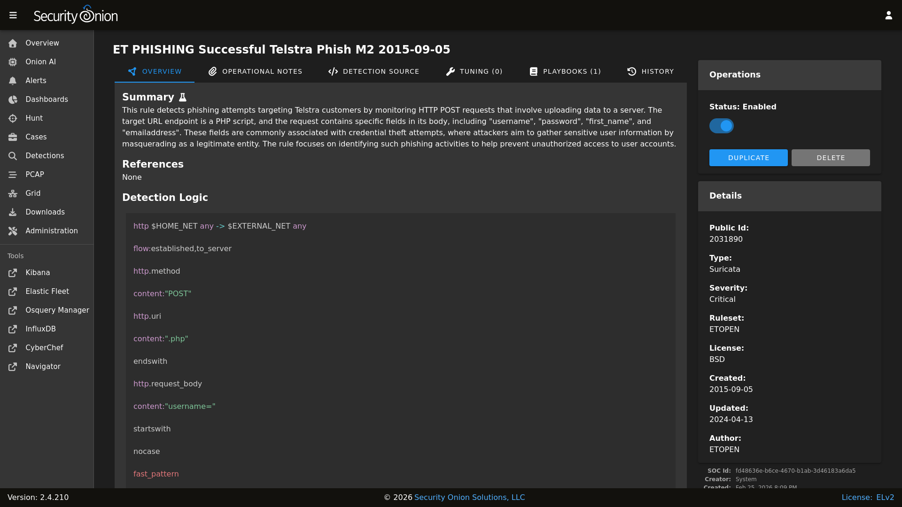
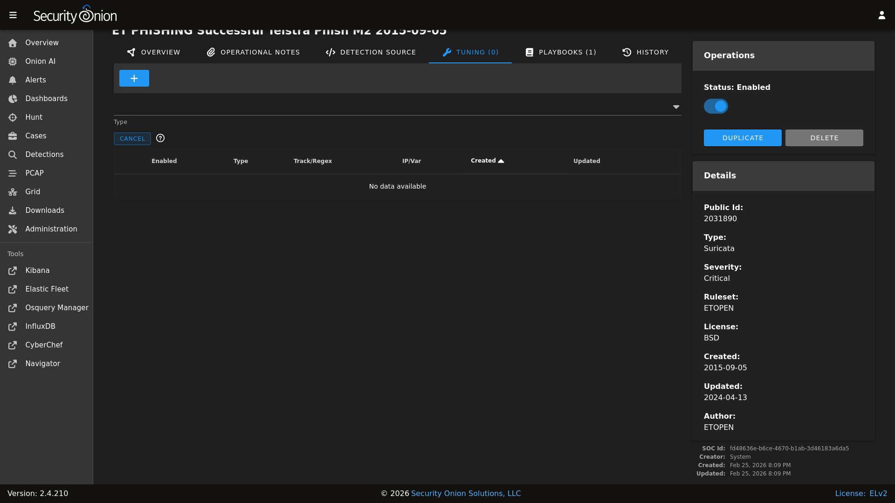
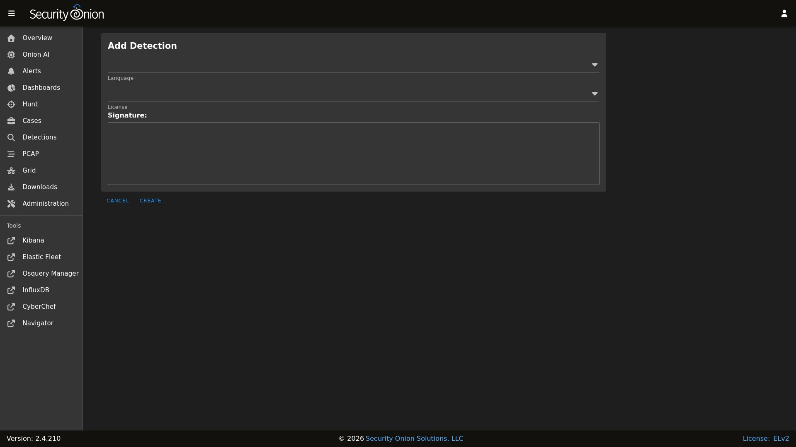

NIDS
NIDS (Network Intrusion Detection System) rules are loaded into Suricata to monitor network traffic for suspicious or noteworthy activity. Active NIDS rules generate alerts that can be found in Alerts.
Managing Existing NIDS Rules
You can manage existing NIDS rules using Detections. There are two ways to do so:
From the main Detections interface, you can search for the desired detection and click the binoculars icon.
From the Alerts interface, you can click an alert and then click the
Tune Detectionmenu item.
Once you’ve used one of these methods to reach the detection detail page, you can check the Status field in the upper-right corner and use the slider to enable or disable the detection.
{kind=link}

To tune the detection:
click the TUNING tab
click the blue + button
select the type of tuning (Modify, Suppress, or Threshold)
fill out the requested values
click the
CREATEbutton
{kind=link}

Enabling and Disabling with Regex
NIDS rules can be enabled or disabled in Detections using regex patterns. Navigate to SOC Administration - Configuration and filter for regex, then drill down into soc –> config –> server –> modules –> suricataengine –> disableRegex or enableRegex.
The regex flavor is Google RE2: https://github.com/google/re2/wiki/Syntax
In ETOPEN, categories are prepended to the rule name. For example, the ET EXPLOIT PHP-Live-Chat Get Shell Attempt Inbound rule is in the ET EXPLOIT category. So suppose you want to disable the ET EXPLOIT and ET MALWARE categories but NOT the ET EXPLOIT_KIT category. You would use the following regex patterns:
ET EXPLOIT\s
ET MALWARE\s
The \s is a shortcut for whitespace and is useful in this situation to make sure we are only matching the specific categories that we want to disable.
If a detection would be matched by both an enable and disable regex, it is enabled. If a detection’s status is changed via the Detections interface but it is currently matched by a regex pattern, the change initiated from the Detections interface is reverted and a message is shown.
Enable and disable operations that are based on regex patterns are actioned during the daily rule update. If you have made a change to the regex patterns and would like to have it implemented more immediately:
Under Grid Configuration, click the
SYNCHRONIZE GRIDbutton and wait about 5 minutes for it to complete.Navigate to Detections, click the Options menu, select Suricata in the dropdown menu, click the
FULL UPDATEbutton, and then wait for it to complete.Refresh the Detections page and you should see the relevant rule statuses have changed.
Note:
If a disable regex is applied to a setter flowbit rule and that rule is still required, it will be written out to the rules file as enabled, but noalert
Tuning Overrides
Overrides allow you to tune rule behavior without modifying the rule itself. Security Onion supports three types of overrides for NIDS rules.
Threshold Override
The threshold override limits how often a rule generates alerts. Use this when a rule is generating too many alerts and you want to reduce volume without disabling the detection.
Thresholds are written to Suricata’s threshold.conf file and control alert frequency based on occurrence count and time window.
Threshold Type:
limit,threshold, orbothlimit: Alert at most N times per time windowthreshold: Alert only after N occurrences per time windowboth: Alert once per time window after N occurrences
Track:
by_srcorby_dst- whether to track per source IP or destination IPCount: Number of occurrences for the threshold logic (must be > 0)
Seconds: Time window in seconds (must be > 0)
Example: Limit alerts to once per hour per source IP:
- Threshold Type:
limit- Track:
by_src- Count:
1- Seconds:
3600
Result in threshold.conf:
threshold gen_id 1, sig_id 2001219, type limit, track by_src, count 1, seconds 3600
Suppress Override
The suppress override silences alerts from specific IP addresses or networks. Use this when a rule generates false positives from known-good sources.
Suppressions are written to Suricata’s threshold.conf file. When traffic matches the rule and originates from (or is destined to) the specified IP, no alert is generated.
Track:
by_srcorby_dst- suppress based on source IP or destination IPIP: IP address, CIDR network, or Suricata variable (e.g.,
192.168.1.100,10.0.0.0/8, or$SCANNERS)
Example: Suppress alerts from a vulnerability scanner:
- Track:
by_src- IP:
192.168.50.10
Result in threshold.conf:
suppress gen_id 1, sig_id 2001219, track by_src, ip 192.168.50.10
Example: Suppress using a Suricata variable:
- Track:
by_src- IP:
$SCANNERS
Result in threshold.conf:
suppress gen_id 1, sig_id 2001219, track by_src, ip $SCANNERS
Modify Override
The modify override allows you to change the content of a Suricata rule using regular expression pattern matching. This is useful for tuning rules without creating custom copies.
How It Works
The modify override applies a regex find-and-replace to the rule content at sync time. The original rule in the database is unchanged; the modification is applied when writing the rules file that Suricata reads.
Regex: A Go-compatible regular expression pattern to match
Value: The literal replacement string
Note
The replacement string is treated as literal text. Backreferences (\1, \2, etc.) are not supported. If you need to capture part of the match, use multiple specific overrides instead.
Examples
Exclude IP Range from Variable
To exclude $DC_SERVERS from $EXTERNAL_NET:
- Regex:
\$EXTERNAL_NET- Value:
[$EXTERNAL_NET,!$DC_SERVERS]
Before:
alert tcp $EXTERNAL_NET any -> $HOME_NET any (msg:"Example"; sid:1001;)
After:
alert tcp [$EXTERNAL_NET,!$DC_SERVERS] any -> $HOME_NET any (msg:"Example"; sid:1001;)
Change Threshold Seconds
To change a rule’s threshold from 60 seconds to 3600:
- Regex:
seconds \d+- Value:
seconds 3600
Before:
alert http any any -> any any (msg:"Test"; threshold:type limit,track by_src,count 1,seconds 60; sid:1001;)
After:
alert http any any -> any any (msg:"Test"; threshold:type limit,track by_src,count 1,seconds 3600; sid:1001;)
Modify Content Match
To change a specific content match value:
- Regex:
content:"67:98:30- Value:
content:"88:98:30
Before:
alert tls any any -> any any (msg:"SSL Cert"; content:"67:98:30:81:90"; sid:1001;)
After:
alert tls any any -> any any (msg:"SSL Cert"; content:"88:98:30:81:90"; sid:1001;)
Limitations
No backreferences: Python-style backreferences (
\1,\2) in the replacement string are not supported. The sync will fail with an error if these are detected.PCRE exception: Backslash sequences inside
pcre:"..."sections are allowed, as these are valid PCRE syntax.Literal replacement: The replacement value is always treated as literal text. Special regex characters in the replacement do not have special meaning.
Adding New NIDS Rules
To add a new NIDS rule, go to the main Detections page and click the blue + button between Options and the query bar. A form will appear where you will:
click the Language drop-down and select
Suricataoptionally specify a license
add the signature
click the
CREATEbutton and the detection should deploy to your grid at the next 15-minute cycle
{kind=link}

Update Frequency
By default, Security Onion checks for new NIDS rules every 24 hours. You can change this value as follows:
Navigate to Administration –> Configuration.
At the top of the page, click the
Optionsmenu and then enable theShow advanced settingsoption.Navigate to soc –> config –> server –> modules –> suricataengine –> communityRulesImportFrequencySeconds.
Allow External Access to NIDS Rules
You can enable external access to NIDS rules managed by Detections. This is useful when configuring OPNsense or other network devices to pull NIDS rules from your Security Onion deployment. You can do this as follows:
Navigate to Administration –> Configuration.
At the top of the page, click the
Optionsmenu and then enable theShow advanced settingsoption.Navigate to nginx –> config –> external_suricata.
On the right side of the page, change the value to
trueand then click the checkmark to save the new setting.You can wait for the next grid update or click the
SYNCHRONIZE GRIDbutton under Options.Once the grid is fully synchronized, the manager should listen on port 7789 for https connections from hosts defined in the
external_suricatahost group.
Configuring Rulesets
Security Onion allows you to configure multiple NIDS rulesets. You can manage these rulesets by navigating to Administration –> Configuration –> soc –> config –> server –> modules –> suricataengine –> rulesetSources. This setting is also available via the Configuration quicklinks.
There are two configuration profiles:
default: Used for standard (non-Airgap) deployments
airgap: Used for Airgap deployments
If your system is in Airgap mode, the airgap configuration profile will automatically be used - otherwise the default is in use.
Within this configuration, you can enable additional rulesets, add custom rulesets, or disable existing ones. When you save a ruleset configuration change and apply the SOC state, Security Onion will detect the change and automatically sync all configured rulesets within 15 minutes.
OISF-maintained list of Suricata-compatible rulesets: https://github.com/OISF/suricata-intel-index
Note
Each ruleset must have a unique name. Duplicate names will cause sync failures.
Ruleset Configuration Options
Each ruleset source has the following configuration options:
Ruleset Name: Required. The unique name for this ruleset (e.g., “Emerging-Threats”, “ABUSECH-SSLBL”, “local-rules”). This is the name displayed in the UI.
Description: Optional description of the ruleset.
Enabled: Required. If set to false, existing rules and overrides from this ruleset will be removed.
License Key: Optional. Required for commercial rulesets like ET Pro.
Source Type: Required. Either
url(downloads rules from HTTPS) ordirectory(reads rules from local filesystem).Source Path: Required. The full URL or directory/file path depending on Source Type. See Supported Source Path Formats below.
Exclude Files: Optional. List of rule file names to exclude, separated by commas (e.g.,
*deleted*, *retired*).Ruleset License: Required. The license type for this ruleset (e.g., “BSD”, “Commercial”, “CC0-1.0”).
Read Only: Optional, defaults to false. When enabled, prevents modification of rule content via the UI - users can still enable/disable rules and add tuning overrides (suppress, threshold, modify). Use this for vendor-managed rulesets where you want to preserve the original rule text.
Delete Unreferenced: Optional, defaults to false. Controls what happens to rules in Elasticsearch when they are removed from the source.
false (default): Rules removed from the source remain in Elasticsearch. This preserves user modifications and prevents accidental data loss.
true: Rules removed from the source are automatically deleted from Elasticsearch. Use this when the source is authoritative (e.g., git-managed rulesets).
Warning
Changing this setting from
falsetotruewill delete any rules that no longer exist in the source. If you have orphaned rules (rules in ES but not in source), they will be permanently removed on the next sync.
Supported Source Path Formats
For url Source Type:
URL to a
.rulesfile (e.g.,https://rules.emergingthreats.net/open/suricata-7.0.3/emerging-all.rules)URL to a
.tar.gzarchive (e.g.,https://rules.emergingthreats.net/open/suricata-7.0.3/emerging-all.rules.tar.gz)
For directory Source Type:
Directory containing multiple
.rulesfiles (e.g.,/nsm/rules/custom-local-repos/local-suricata-import/)Directory containing a single
.rulesfileDirect path to a
.rulesfile (e.g.,/nsm/rules/custom-local-repos/local-suricata-import/import.rule)Direct path to a
.tar.gzarchive (e.g.,/nsm/rules/custom-local-repos/local-suricata-import/import.tar.gz)
URL Source Options
When using url as the Source Type, additional options are available:
URL Hash: URL to a hash file (.md5 or .sha256) for verifying the downloaded ruleset.
Proxy URL: HTTP/HTTPS proxy URL for downloading the ruleset. (e.g.,
http://192.168.1.50:3128)Proxy Username: Proxy authentication username.
Proxy Password: Proxy authentication password.
Proxy CA Path: Path to CA certificate file for MITM proxy verification (e.g.,
/opt/so/saltstack/local/salt/suricata/files/ruleset_ca.crt)
Default Rulesets
- Emerging Threats (ETOPEN/ETPRO)
Security Onion includes the Emerging Threats Open ruleset by default. To switch to ET Pro (commercial), edit the Emerging-Threats ruleset and enter your license key in the License Key field. Click the green checkmark to save, then apply the SOC state. Leave the License Key empty for ET Open (free) rules.
Optimized for Suricata
ET Open is free, ET Pro requires a license fee per sensor
For more information, see:- Abuse.ch SSL Blacklist (ABUSECH-SSLBL)
SSL certificate blacklist from Abuse.ch. Only available in non-Airgap, disabled by default.
For more information, see:- Local Rules
A directory-based ruleset source for custom local rules. Rules are read from
/nsm/rules/custom-local-repos/local-suricata. This ruleset is enabled by default with Read Only set to false, allowing you to edit rules directly once they are imported. Keep in mind that if the local .rules file remains on disk in this location, each sync will attempt to re-import the rules and potentially overwrite any changes made within the web interface.
Suricata Metadata Rulesets
When Suricata is configured as the metadata engine (instead of Zeek), two additional rulesets become available:
- SO_EXTRACTIONS
Extraction rules that control which file types Suricata extracts from network traffic for analysis by Strelka. This ruleset is imported and enabled by default when Suricata is the metadata engine.
- SO_FILTERS
Filter rules that control which metadata Suricata logs. Use these to reduce unnecessary metadata logging. This ruleset is imported but disabled by default when Suricata is the metadata engine.
Common Ruleset Configurations
This section provides configuration examples for common deployment scenarios.
ETPRO in Airgap Environments
For airgap deployments using ET PRO (commercial) rules, you must manually transfer the ruleset to your Security Onion manager since it cannot download from the internet.
Prerequisites:
Valid ET PRO license key
A system with internet access to download the ruleset
Procedure:
Download the ET PRO ruleset (on internet-connected system)
Use your license key to download the latest ruleset:
# Replace YOUR_LICENSE_KEY with your actual ET PRO license key curl -o etpro.rules.tar.gz \ "https://rules.emergingthreatspro.com/YOUR_LICENSE_KEY/suricata-7.0.3/etpro.rules.tar.gz"
Transfer to airgapped manager
Use your approved file transfer method to copy the archive to the Manager node.
Place the ruleset on the manager
Copy the archive to a directory accessible by SOC:
sudo cp etpro.rules.tar.gz /nsm/rules/custom-local-repos/local-etpro-suricata/ sudo chown -R socore:socore /nsm/rules/custom-local-repos/local-etpro-suricata
Configure the ruleset source
Navigate to Administration –> Configuration –> soc –> config –> server –> modules –> suricataengine –> rulesetSources.
Modify the existing
Emerging-Threatsruleset (recommended):License Key:
YOUR_LICENSE_KEY
You can also create a new ruleset source (make sure to disable the existing Emerging-Threats ruleset):
Ruleset Name:
ETPRO-AirgapSource Type:
directorySource Path:
/nsm/rules/custom-local-repos/local-etpro-suricata/etpro.rules.tar.gzRead Only:
true(recommended - preserves vendor rule content)Delete Unreferenced:
true(recommended - removes outdated rules when you update the archive)Ruleset License:
CommercialEnabled:
true
Apply configuration and sync
Save the configuration and apply the SOC state. Then either wait for the next automatic sync (up to 15 minutes) or trigger a manual sync:
Navigate to Detections
Click Options menu
Select Suricata engine
Click
FULL UPDATE
Updating Rules:
To update your ET PRO rules in an airgap environment:
Download the latest
etpro.rules.tar.gzon an internet-connected systemTransfer to the airgapped manager
Replace the existing archive:
sudo cp etpro.rules.tar.gz /nsm/rules/custom-local-repos/local-etpro-suricata/
Wait for the next automatic sync or trigger a manual
FULL UPDATE
With Delete Unreferenced: true, rules that were removed in the new version will be automatically cleaned up from Elasticsearch.
Flowbit Dependency Handling
Overview
Suricata rules can use flowbits to share state between rules. A common pattern is for one rule to detect an initial condition and “set” a flowbit, while other rules check if that flowbit is set before alerting. This creates a dependency between rules.
Security Onion automatically manages these dependencies to ensure your enabled rules function correctly, even when you disable related rules.
How Flowbits Work
Flowbits allow rules to communicate within a single network flow:
Setter rules use
flowbits:set,<name>to mark a flowGetter rules use
flowbits:isset,<name>to check if a flow was marked
For example, a malware detection might work like this:
Rule A (setter): Detects initial malware handshake, sets
flowbits:set,malware.detectedRule B (getter): Detects follow-up command, requires
flowbits:isset,malware.detected
Rule B will only alert if Rule A has already matched on the same flow. If Rule A is disabled, Rule B can never trigger.
Automatic Dependency Resolution
When you disable a rule that sets a flowbit needed by other enabled rules, Security Onion automatically handles this:
Your preference is preserved - The rule remains marked as “disabled” in Elasticsearch & SOC
The rule still runs - It is included in the active ruleset so dependent rules can function
No alerts are generated - The
noalertoption is automatically added so the disabled rule runs silently
Example
Consider these rules:
SID |
Rule Name |
Flowbit |
Your Setting |
|---|---|---|---|
2012236 |
x0Proto Init |
|
Disabled |
2012237 |
x0Proto Client Info |
|
Enabled |
2012238 |
x0Proto Pong |
|
Enabled |
Even though you disabled rule 2012236, it will still run because rules 2012237 and 2012238 depend on it. However:
Rule 2012236 will not generate alerts
Rules 2012237 and 2012238 will alert normally when their conditions match
In the rules file, you will see a comment explaining the automatic inclusion:
# AUTO-ENABLED (flowbit: et.x0proto, required by 2 rule(s)): This disabled rule runs with noalert
alert tcp $EXTERNAL_NET any -> $HOME_NET any (msg:"x0Proto Init"; ... noalert; sid:2012236; ...)
When Disabled Rules Are Excluded
A disabled setter rule is only auto-enabled if at least one getter rule depends on it. If you disable all rules that check a particular flowbit, the setter rule will be excluded from the active ruleset entirely.
Using the example above, if you disable all three rules (2012236, 2012237, and 2012238), then rule 2012236 will not be included in the rules file since no enabled rules need its flowbit.
Sync Block
For the upgrade to 2.4.200, the dependency on idstools has been removed and all functionality has been moved directly into SOC. Because of the complexity of this change, if SOUP detects a non-default Suricata ruleset configuration, it creates a block file that stops any further Suricata ruleset changes until the block file has been removed.
Warning
This block is critical because if the Suricata rulesets are synced without the configuration properly migrated, all current rules and overrides in SOC Detections will be removed and will need to be recreated.
To resolve this block, use the following procedure:
Review the syncBlock file
Login to the Manager and view the syncBlock file to see what non-default configuration was detected:
sudo cat /opt/so/conf/soc/fingerprints/suricataengine.syncBlock
Example output showing ETPRO was detected:
Suricata ruleset sync is blocked until this file is removed. **CRITICAL** Make sure that you have manually added any custom Suricata rulesets via SOC config before removing this file - review the documentation for more details: https://docs.securityonion.net/en/2.4/nids.html#sync-block Custom so-rule-update detected (hash: 207d8918a2d963bb7dcc0f1ebf28d6f7b5778019fedf0cc36d5d0850cbd8a529) ETPRO code found: YOUR_LICENSE_KEY
Note any license codes or custom configurations mentioned - you will need to enter these in the next step.
Configure Suricata rulesets in SOC
Navigate to SOC Configuration:
Administration –> Configuration –> Quicklinks –> Configure NIDS Rulesets
There are two configuration profiles:
default: Used for standard (non-Airgap) deployments
airgap: Used for Airgap deployments
Select the appropriate profile for your environment.
For ETPRO configurations - Non-Airgap:
Find the
Emerging-Threatsruleset entryCopy and paste your ETPRO license code (shown in the syncBlock file) into the
License Keyfield
For ETPRO configurations - Airgap:
Following the procedure outlined here: ETPRO in Airgap Environments
During this migration, it is important to use the builtin
Emerging ThreatsAirgap config profile.For proxy configurations:
If your environment requires a proxy to download rulesets, configure the proxy settings on the ruleset entry:
Proxy URL: Your proxy server URL (e.g.,
http://192.168.1.50:3128)Proxy Username / Proxy Password: If proxy authentication is required
Proxy CA Path: Path to CA certificate if using a MITM proxy
For custom rulesets:
If you had custom rulesets configured, add new ruleset entries with the appropriate Source Type, Source Path, and other settings. See Configuring Rulesets for details.
Save and synchronize configuration
Click the green checkmark to save your changes
Click
SYNCHRONIZE SOCand wait for it to complete
Remove the syncBlock file
Once the configuration is saved and synchronized, remove the block file:
sudo rm /opt/so/conf/soc/fingerprints/suricataengine.syncBlock
Trigger a full ruleset sync
Navigate to Detections
Click the
OptionsmenuIn the engine dropdown, select
SuricataClick
FULL UPDATE
Verify successful sync
Within a minute or so, you should see a success message:
Synchronized Suricata rules successfully.The engine status indicator should clear to
OK.If the sync fails, click the
Sync Failurecrosshair icon in the top-right corner of the Suricata engine to view the error details.